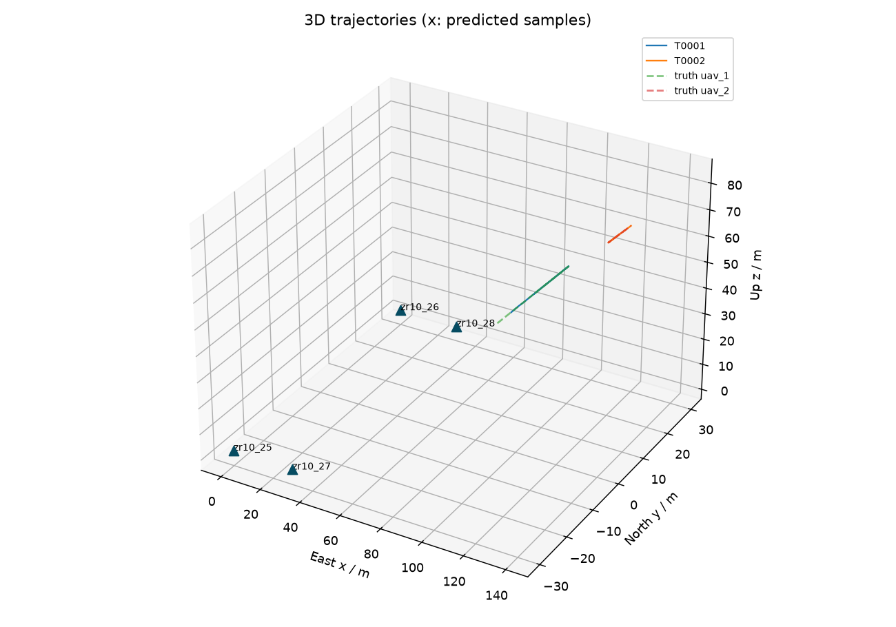
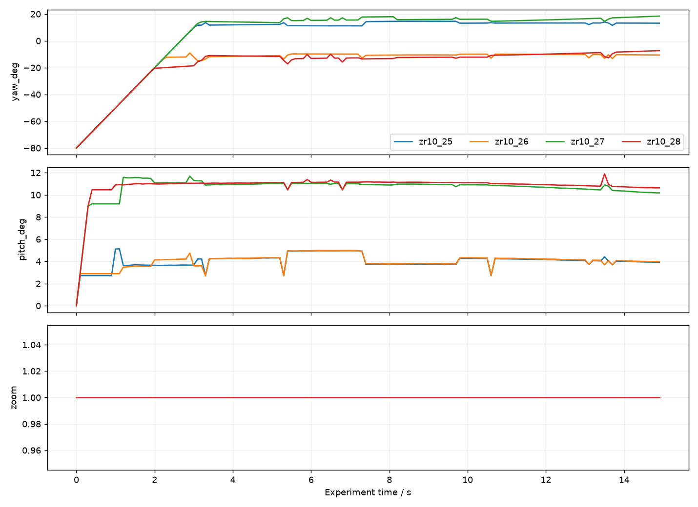
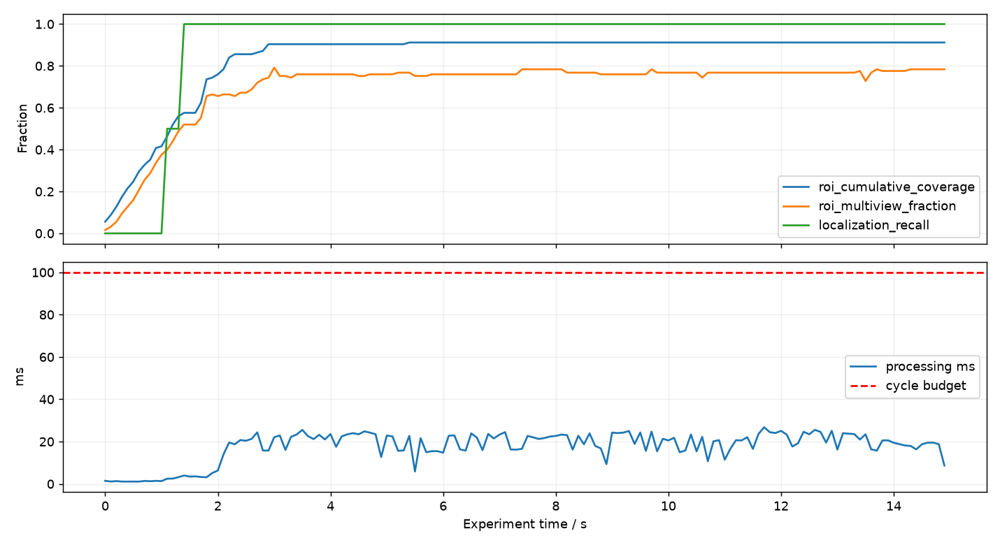

sim_20260906T163301_801174Z
测量轨迹与预测轨迹分别记录。仿真真值用于评估，不进入算法观测。周期耗时包含几何、融合、策略、指标与日志入队，不包含相机曝光和网络延迟。
| run_id | sim_20260906T163301_801174Z |
| mode | sim |
| completed | True |
| cycles | 150 |
| duration_s | 14.999999999999963 |
| cycle_ms_p50 | 20.470249990466982 |
| cycle_ms_p95 | 24.67230501351878 |
| cycle_ms_max | 26.7831000383012 |
| deadline_misses | 0 |
| localizations | 275 |
| track_ids | 2 |
| command_errors | 0 |
| roi_instant_coverage | 0.808 |
| roi_cumulative_coverage | 0.912 |
| roi_multiview_fraction | 0.784 |
| measured_track_count | 2 |
| predicted_track_count | 0 |
| localization_recall | 1.0 |
| cumulative_localization_recall | 0.9166666666666666 |
| position_rmse_m | 0.11647836760586312 |
| evaluation_match_count | 275 |
| id_switches | 0 |
| longest_localization_gap_s | 1.3 |
| truth_count | 2 |


